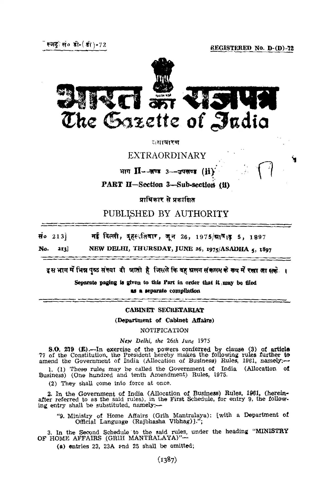
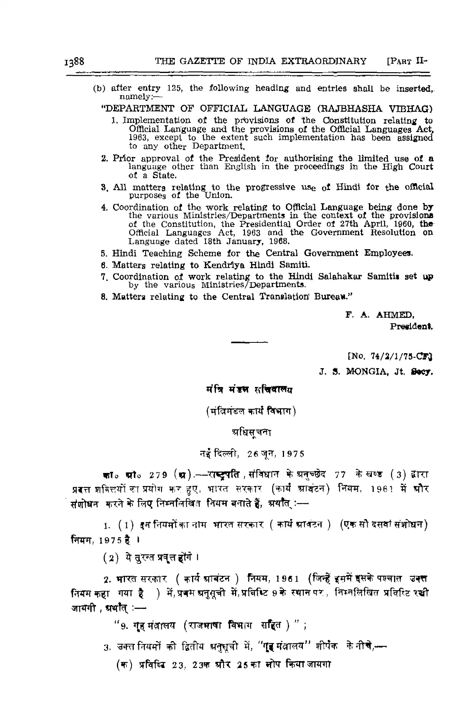
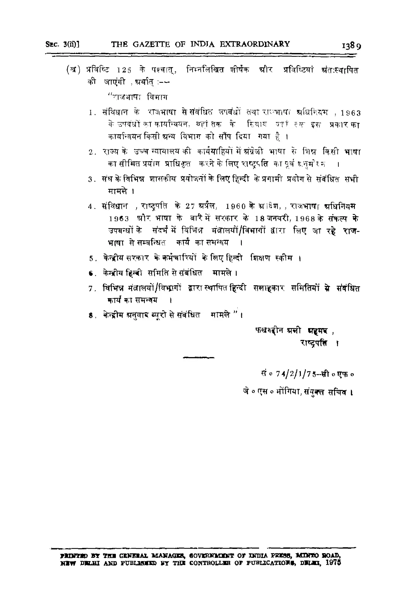

Amendment #110 (S.O. 279(E), 1975)
3 changes: 1 to the First Schedule, 2 to the Second Schedule. 2 applied1 not applied
The order, page by page
Page 1 of 4

12Schedule 1 › entry 9
- 9. Ministry of Home Affairs
- -. Department of Official Language
applied at schedule 1 › ministry 9 in the Rules after #110
Schedule 2 › MINISTRY OF HOME AFFAIRS › entry 23; Schedule 2 › MINISTRY OF HOME AFFAIRS › entry 23A; Schedule 2 › MINISTRY OF HOME AFFAIRS › entry 25
not applied (the change could not be placed in the Rules as read; see How this document was read)
Page 2 of 4

3after Schedule 2 › MINISTRY OF HOME AFFAIRS › entry 125
- DEPARTMENT OF OFFICIAL LANGUAGE
- 1. Implementation of the provisions of the Constitution relating to Official Language and the provisions of the Official Languages Act 1983, except to the extent such implementation has been assigned to any other Department.
- 2. Prior approval of the President for authorising the limited use of a language other than English in the proceedings in the High Court of a State.
- 3. All matters relating to the progressive use of Hindi for the official purposes of the Union.
- 4. Coordination of the work relating to Official Language being done by the various Ministries / Departments in the context of the provisiona of the Constitution, the Presidential Order of 27th April, 1960, the Official Languages Act, 1963 and the Government Resolution on Language dated 18th January,…
- 5. Hindi Teaching Scheme for the Central Government Employees.
and 3 more
- 6. Matters relating to Kendriya Hindi Samiti.
- 7. Coordination of work relating to the Hindi Salahakar Samitis set up by the various Ministries / Departments.
- 8. Matters relating to the Central Translation Bureau.
applied at schedule 2 › ministry MINISTRY OF HOME AFFAIRS › part III › entry 125 in the Rules after #110
Page 3 of 4

Page 4 of 4
How this document was read
Edits to the reading
| Date | By | Edit | Before → after |
|---|---|---|---|
| 12 November 2026 | claude | word corrected |
Known issues
| Change | Issue | Known as |
|---|---|---|
| 2 | change 2: no entry 23A under schedule 2 › ministry MINISTRY OF HOME AFFAIRS | Home Affairs' structure |
From the Government of India (Allocation of Business) Rules, 1961 and their amendments, as published by the Cabinet Secretariat (cabsec.gov.in), read by orgpedia. The readings of the older scanned gazettes have known gaps.